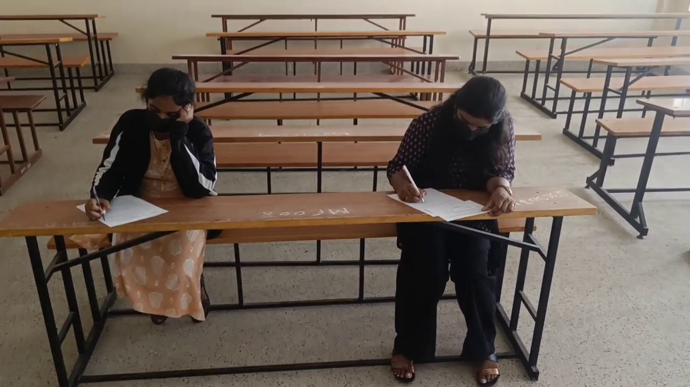
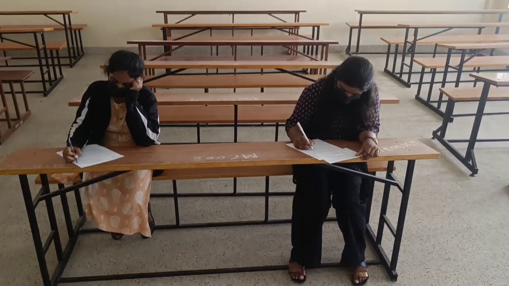

Exam Copy Detection Using AI
We provide high-quality image datasets designed to train AI models for detecting exam copying behavior. The images shown are part of the data we deliver to support the development of AI systems focused on academic integrity. This project highlights the kind of specialized training data solutions we offer for machine learning and computer vision applications.

 
